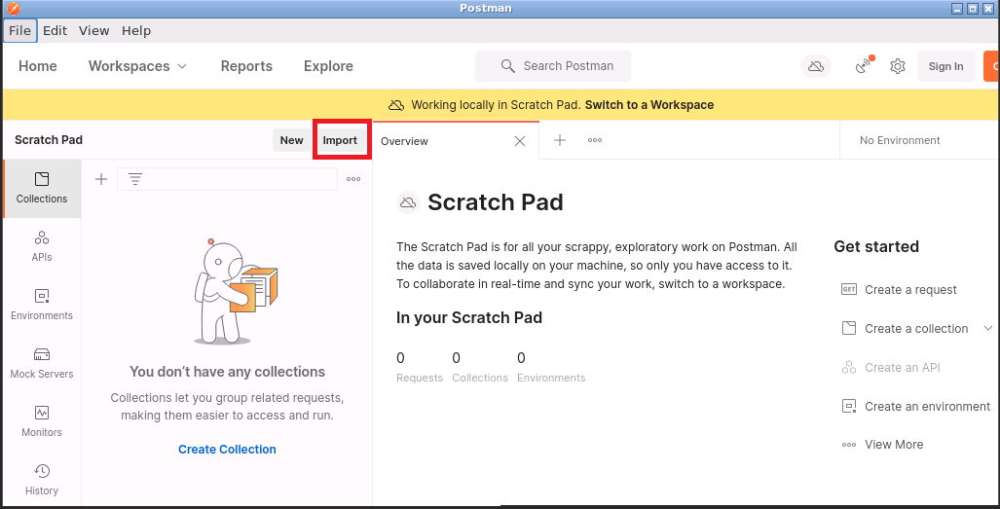
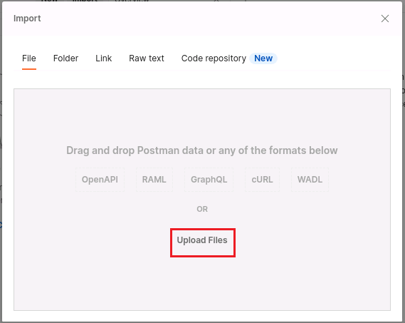
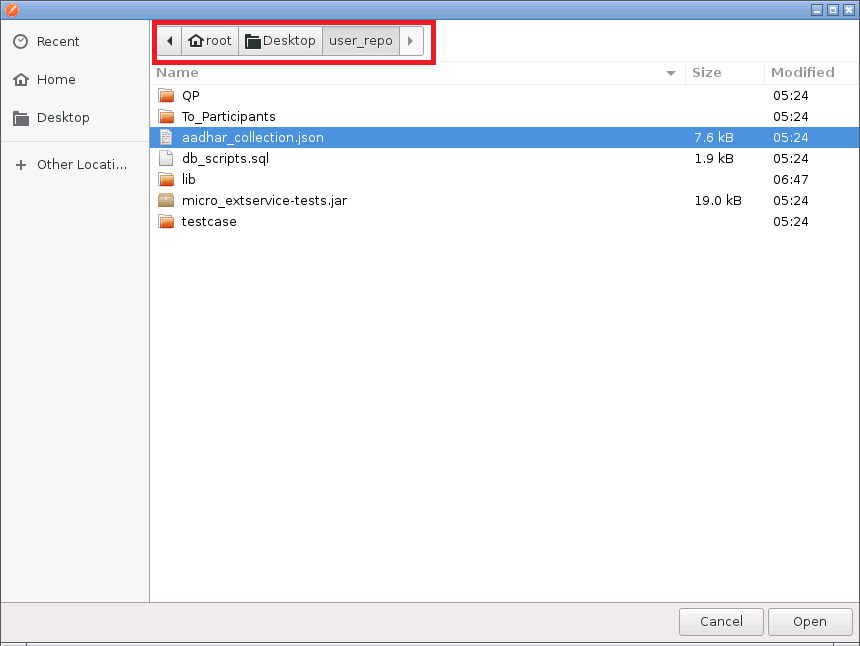
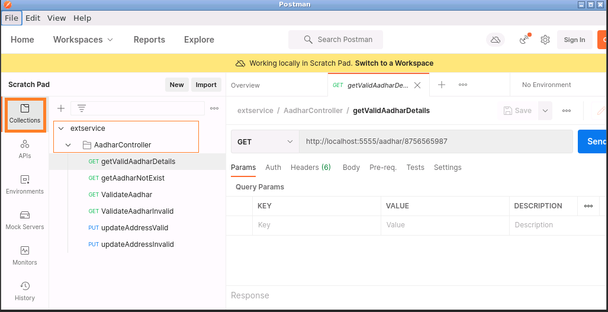
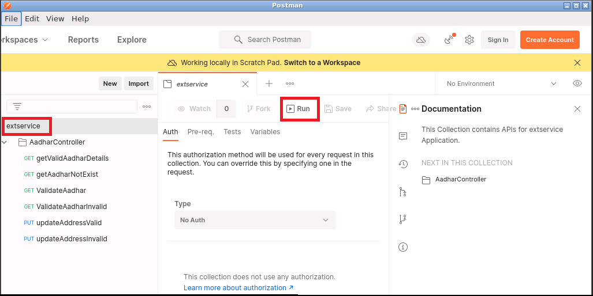
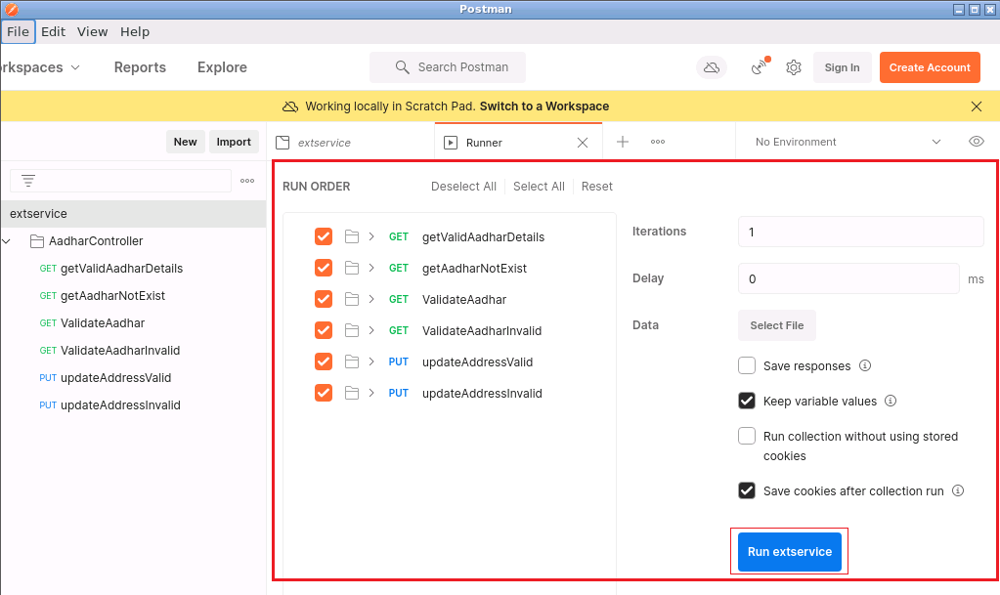
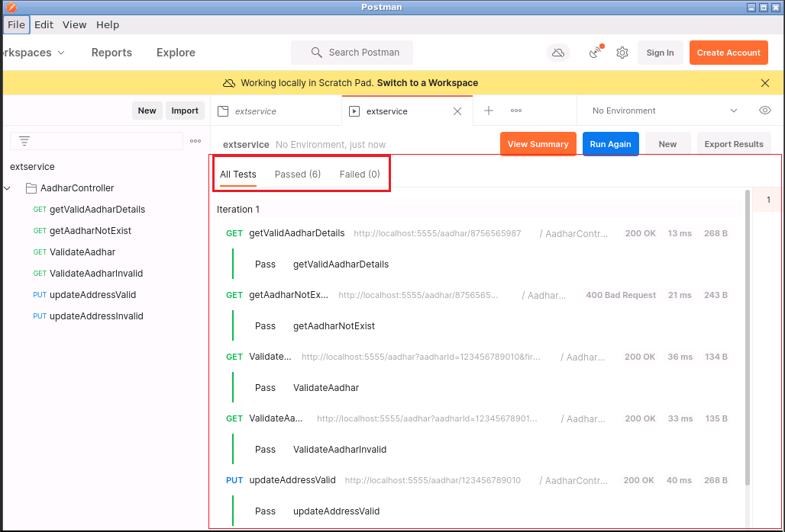

Assessment Instruction:
You will be provided with an implementation of code using Spring Boot. Please follow the steps to execute the application:
- Run your application as Spring Boot/Java Application
- You need to use Postman tool for testing the REST endpoint
- Use the instructed port number only for executing the Spring Microservices projects.DO NOT change the port numbers.
- Few necessary configurations(in all the projects) have been provided. DO NOT alter those configurations
- For getting connected to MySQL database use the credentials as:
- username: root
- password: root
- You can refer to db_scripts.sql placed in src/main/resources folder of micro_extservice-master application for the sample data in database.
- Before clicking on the “Run” button to test your code, make sure that all the applications are running.
- Refer to the log file which gets created in the project directory (To_Participants\micro_extservice-master) for debugging the code. (Execute the project and refresh the folder structure, to view the log file).
Steps to verify REST endpoint using Postman.
We have made testing REST endpoints using Postman simpler for you by using Postman collection.
Follow the below steps to import collection to the Postman and test the REST endpoints. Also we have added test case for each endpoint to confirm whether the code is correct or not.
NOTE: The test case are strictly bound with sample inputs, if you change inputs the test case may fails.
- 1. In the Postman window, click on Import button to import API collection.

2. Click on Upload Files button in the import dialogue box to browse the collection file aadhar_collection.json

3. Path to browse the aadhar_collection.json file: /root/Desktop/user_repo/aadhar_collection.json Click on Open and then click on Import button to import the Collection.

4. Click on the Collections tab to see the imported Postman Collection and expand the AadharController folder to reveal the endpoints.

5. Test the endpoints (as per the below table) to check the output of Valid and InValid cases.
Steps to execute test cases
6. Cilck on Run option to select and execute test cases.

7. Make sure that all the endpoints are selected or click on Select All and click on Run extservice button.

8. Check how many test cases are passed and failed.

[Note: In Postman Collection, the port number used is same as the one which you are asked to set in application.properties file i.e. 5555 ]
The below table provides the information about the REST-endpoints to be used, sample request to be sent and the response format.
Note: In the below table value inside :<<>> refers to a dynamic value which can keep changing.Remove <<>> and use it as sample request
|
User Story |
Request Type(Valid/Invalid) |
Restful Base URL |
Sample Request |
Sample Response |
|
Validate Aadhar |
Valid |
http://localhost:5555/aadhar?aadharId=<<123456789010>>&firstName=<<Robert>>&lastName=<<Smith>> |
NA | true |
| InValid |
http://localhost:5555/aadhar?aadharId=<<123456789010>>&firstName=<<John>>&lastName=<<Smith>> |
NA | false | |
|
Update Address |
Valid |
http://localhost:5555/aadhar/<<123456789010>> |
{ |
{ |
| InValid |
http://localhost:5555/aadhar/<<123456789025>> |
{ |
{ |
|
|
View Aadhar |
Valid |
http://localhost:5555/aadhar/<<8756565987>> |
NA |
{ |
| InValid |
http://localhost:5555/aadhar/<<8756565988>> |
NA |
{ |
Problem Statement:
In this challenge, you would be building the microservice application - ExtService where CRUD operations on Aadhar data can be done. The requirement is to use the concepts of Spring Boot and Spring Microservices to implement the following functionalities :
- Validate Aadhar Details
- View Aadhar Details
- Update Address
- You are provided with all the necessary code to implement the Aadhar Module functionalities (including the repository layers for database interactions).
- You have to implement the business layer(AadharServiceImpl) and presentation layer(AadharController) only for the required functionalities.
- You are also provided with the basic Spring Boot project for working with Service Registry. You have to add the necessary configurations to work with extservice Microservice.
- The Aadhar module functionalities would be validated by executing a set of JUnit test cases.
Important:
- The project uses MySQL Database for data persistence. Use the table script given in db_scripts.sql file in resources with sample data.
- Refer to the TEST SCENARIO section for the URL and test data.
Functionalities to be implemented
Acceptance Criteria:
- Validate Aadhar: This module validates the passed data.
- Check if the passed AadharId,First name and Last name parameters are valid. If so, fetch the corresponding details from database.
[HINT: invoke isInputValid() of AadharServiceValidation class] - If the returned aadhar instance is not null and the First name and Last name entered by the user is matching with entity fetched from database, then return true otherwise return false with Http status code as 200.
- Check if the passed AadharId,First name and Last name parameters are valid. If so, fetch the corresponding details from database.
- Update Address: Using this module, a customer can update his address details based on his aadharId.
- The entered aadharId must be of 12-digits. If not, throw the ExternalServiceException with parameter as ExceptionConstants.CUSTOMER_AADHAR_FORMAT_INVALID.toString()
[HINT: Refer to isInputValid() of AadharServiceValidation for the validation] - Check if the address to be updated is non-empty. If empty, then throw the ExternalServiceException with parameter as ExceptionConstants.CUSTOMER_ADDRESS_INVALID.toString()
[HINT: invoke isAddressValid() of AadharServiceValidation class] - If the above validations criteria are satisfied, then fetch the Aadhar entity from the database. If this entity is not present, then throw ExternalServiceException with parameter as ExceptionConstants.CUSTOMER_AADHAR_INVALID.toString().
- If aadhar entity is present then the respective aadhar record in the database has to updated with new address. If the update operation is not successful, then throw the ExternalServiceException with parameter as ExceptionConstants.SERVER_ERROR.toString()
- AadharController should return the Http status code as 200 with AadharDTO as response in case of successful updation.
- The entered aadharId must be of 12-digits. If not, throw the ExternalServiceException with parameter as ExceptionConstants.CUSTOMER_AADHAR_FORMAT_INVALID.toString()
- View Customer Profile : This module helps in fetching customer's complete profile based on his phone number.
- The phoneNo must be of 10 digits.If not, throw the ExternalServiceException with parameter as ExceptionConstants.CUSTOMER_PHONE_LENGTH_INVALID.toString()
[HINT:invoke isPhoneNoValid() of AadharServiceValidation class]
- The phoneNo must be of 10 digits.If not, throw the ExternalServiceException with parameter as ExceptionConstants.CUSTOMER_PHONE_LENGTH_INVALID.toString()
- Check if the phoneNo is present in the database,then return the corresponding AadharDTO
otherwise throw the ExternalServiceException with parameter as ExceptionConstants.CUSTOMER_PHONE_INVALID.toString().
[HINT: use getByPhoneNo() of AadharRepository to verify the entity existence and invoke prepareDTO() of AadharDTO class]. - If all the validations are successful,then AadharController should return the Http status code as 200 with AadharDTO as response.
- For eureka - Spring Boot Project:
- Configure Eureka Server to run on port no 8761
- For extservice - Spring Boot Project:
- Configure extservice project to run on port no 5555
- This project has to be get registered with eureka server using the name as "AadharMS"
- Verify the extservice Microservice is working by sending the request as: http://localhost:5555/aadhar/<123456789010>
Spring Microservices implementation:
MUST READ INSTRUCTIONS BEFORE YOU START YOUR ASSESSMENT
- You have been provided with an environment with the necessary softwares and tools for you to complete the assessment.
- Please keep an eye on the time of your contest. This environment will end when test is finished by you or your exam time runs out.
- The Project has already been loaded into your environment. Execute the file "Click here" to complete the setup. This will setup your IDE and open the Problem Statement and the project specific instructions in your borwser. In case you close the tab/browser, you can execute the file "instructions.sh" to reopen them.
- Two buttons 'Execute' and 'View Result' are given in the environment. Click on 'Execute' to intermediately test your solution and see the report. You can also see the test analysis report on the desktop of VM. In some cases, execution may take upto 5-7 mins depending on the number of test cases.
- If you face any error in pom.xml present in the project imported to STS (Spring Tool Suite) you must follow the below steps to get the error resolved
Step 1: Open /root/.m2 folder in VM and remove the repository folder present in .m2
Step 2: In STS, do a maven update for the project as given below:
Right click on project -> Maven ->Update Project... -> select Force update of Snapshot/Release check box -> Click on OK - You can continue working while execution is happening. Once execute completes the result will pop up on your window.
- Click on 'View Result' in case you want to view the last executed result again.
- Submission for this component is done when you finish the test/certification as a whole.
- You cannot copy the code to your system from the environment or vice-versa.
- In case of any issue, you can reopen your environment by reopening the test in your browser as long as you have time left.
Instructions to use RestClient
Get Request:
-
Enter the URL in the space provided

-
Select the HTTP Method as
GET

-
Click on Go
(>>) button
Post Request:
-
Enter the URL in the HTTP Request URL portion
-
Under the
method tab select
POST option

-
Under the
Body tab select
String body from the drop down list. Next click
on ‘Edit Content-type & Charset option and select
application/json. Then click on OK button

-
Enter the required JSON string in the String body

-
Click on Go
(>>) button